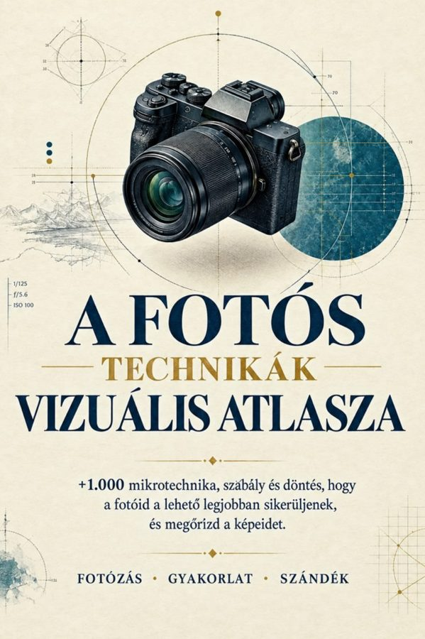

Fő anyag
A Fotós Technikák Vizuális Atlasza
83 vizuális oldal, több mint 1.000 technikával fényről, expozícióról, élességről és kompozícióról.
Megnyitás →Bónuszaid
1. bónusz
Fotózásra Kész Kártyák
Kész beállítások a leggyakoribb jelenetekhez: nézd meg a kártyát, állíts be, exponálj.
Megnyitás →2. bónuszIndulj és Fotózz — 30 Fotós Kihívás
30 vezetett kihívás, amelyekkel edzed a fotós szemed a hétköznapi jelenetekben.
Megnyitás →3. bónuszGyors Diagnózis
Miért nem működik a fotó? Tünet, ok és megoldás, hogy tudd, mit javíts legközelebb.
Megnyitás →Hol kezdd
- Nyisd meg az Atlasz 1. részét (Beállítások), és lapozd át a kiinduló oldalakat.
- Töltsd le a telefonodra a Fotózásra Kész Kártyákat, hogy terepen is kéznél legyenek.
- Válassz ki egy kihívást az Indulj és Fotózz füzetből, és csináld meg még ezen a héten.
- Ha egy kép nem sikerül, nyisd ki a Gyors Diagnózist, és keresd meg a tünetet.
Személyes használatra. Továbbértékesítése és terjesztése tilos.